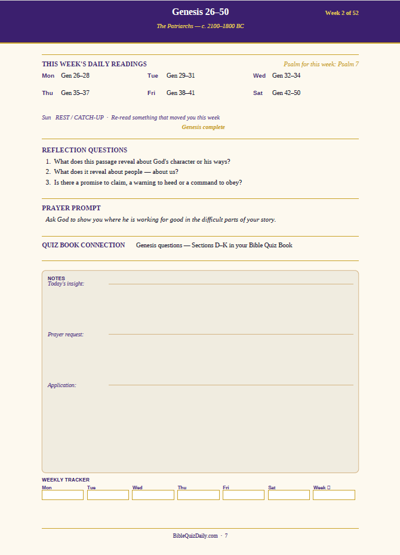
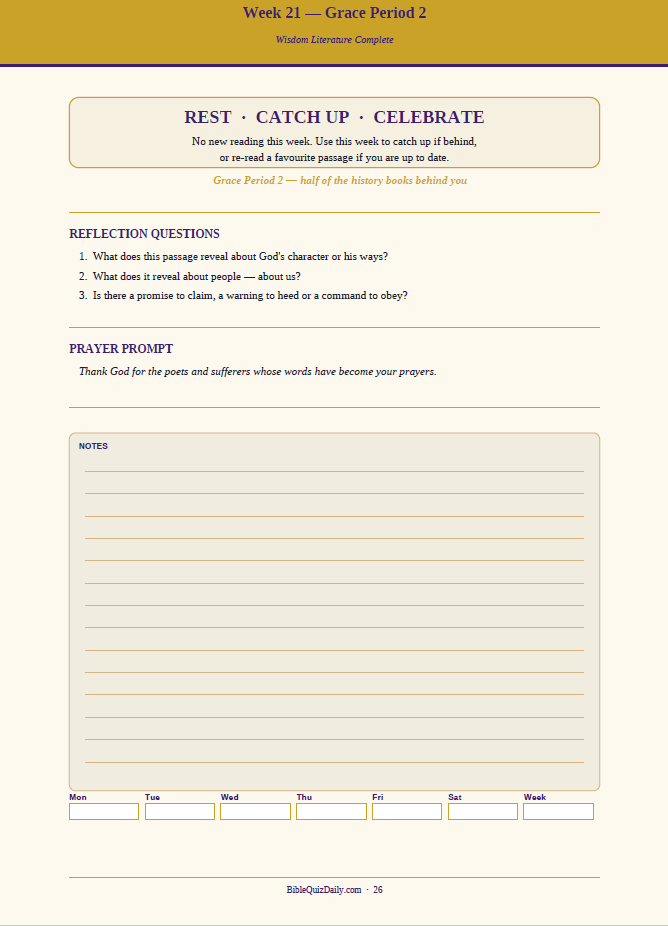

A quiet morning with Scripture — the habit most reading plans are actually trying to build.
Most people who set out to read through the Bible in a year don't fail because they lack discipline. They fail because nobody tells them, up front, how to actually build the habit — what to read with, how to take notes, what to do when they fall behind, or which Bible translation will make the whole thing easier instead of harder.
This isn't a pitch for a particular plan. It's the practical groundwork — how reading plans actually work, what tends to derail them, and how to set yourself up to still be reading in November.
What Most 52-Week Reading Plans Look Like
If you've searched for a 52-week Bible reading plan, you've probably seen the same structure again and again: a rotation through seven categories of Scripture — Epistles, Law, History, Psalms, Poetry, Prophecy, and Gospels — one per day of the week. Over the year you move through all seven in parallel, which keeps you from getting stuck in a slower section like Leviticus for weeks at a time.
Other plans go straight through, cover to cover, or pair one Old Testament and one New Testament reading each day. There's no single "correct" structure — the honest answer is that the best plan is whichever one you'll actually keep open on your desk in October.
Why People Quit Reading Plans — Even Good Ones
Almost nobody quits because they stopped wanting to read the Bible. They quit for a handful of very ordinary reasons:
How to Actually Get More Out of Any Reading Plan
Whatever plan you choose, a few habits make the difference between finishing and quietly giving up by March:
- Attach it to something you already do. Reading right after you make coffee, or right before you turn off the light, survives busy weeks far better than reading whenever you "find time."
- Read in a translation you actually understand. A beautiful but dense translation you have to re-read three times a sentence isn't more spiritual — it's just more likely to get abandoned. Pick clarity over tradition if you're newer to Scripture.
- Keep a simple notebook, not a perfect one. A single line — what stood out, what confused you, one question to ask later — takes 90 seconds and does more for retention than reading alone ever will.
- Plan for the days you'll miss. You will miss days. Decide in advance whether you'll skip ahead, double up, or just pick back up where you left off — deciding now removes the guilt spiral later.
- Don't read entirely alone if you can help it. A spouse, a friend, or a small group on the same passage turns a private discipline into a shared one — and shared habits last longer.
Reading alongside other people — family, friends, or a small group — is one of the strongest predictors of actually finishing.
What to Look for in a Good Study Bible
The single biggest factor in whether a reading plan sticks often has nothing to do with the plan itself — it's whether the Bible you're reading from actually helps you understand what you're reading. A few things worth looking for:
- Cross-references — small footnotes linking related verses across Scripture, so you can follow a theme instead of reading in isolation.
- Book introductions — a short page before each book explaining who wrote it, when, and why. This alone solves a lot of the "I'm lost" feeling in unfamiliar books.
- A readable font and single-column layout — double-column, tiny-print Bibles are harder to read for long stretches than most people expect.
- Maps — genuinely useful once you're reading through the historical books and trying to picture where events actually happened.
If you don't already have a study Bible that fits this list, here are a few well-regarded study Bibles worth considering before you start a year-long reading habit.
As an Amazon Associate, we earn from qualifying purchases.
One Option Built Around These Problems
If you'd rather not build your own system from scratch, the 52-Week Bible Journey is one option designed specifically around the obstacles above. Instead of calendar months, it's organized into 13 historical phases — so each week tells you not just what to read, but where you are in the larger story, like "The Patriarchs, c. 2100–1800 BC" instead of just a chapter list.
Here's an actual page from a normal week — Genesis 26–50, with the daily readings, a Psalm assigned for devotional reading alongside the main passage, three reflection questions, a prayer prompt written for that specific week (not a generic reminder), a pointer to the matching section in the companion quiz book, and a notes section for today's insight, a prayer request, and one application:

A regular week's page — Genesis 26–50, Week 2 of 52.
The five grace periods aren't just blank catch-up weeks either — each one lands at a real milestone and names it: after Week 10 (Conquest & Early Kingdom complete), Week 20 (Wisdom Literature complete), Week 31 (the entire Old Testament complete), Week 41 (Gospels & Acts complete), and Week 52 (the whole Bible complete). Here's what that looks like on the page:

A grace period page — no new reading, just rest, catch-up, or reflection.
Add in a weekly Mon–Sat completion tracker and Sunday as a permanent rest day, and that's 52 more built-in grace days on top of the five full weeks. You can see the full plan as part of the Bible Study Bundle, or as a standalone $9 download.
Ready to Start?
No calendar dates, no wrong time to begin — just open it and start reading. The 52-Week Bible Journey is also part of a complete system with two more resources built to work alongside it.